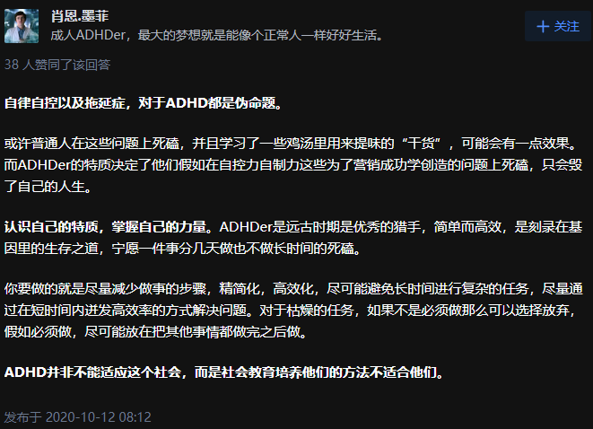

气态雨
@rainnnnn0423
我疑病，一直怀疑自己是adhd 我程度是不够确诊的只是相似症状

garrulous abyss🌈
@garrulous_abyss
我个人很赞同ADHD是“猎手基因”。
就如同猎手,需要不停地观察，不停地动。即使身体纹丝不动，眼睛和耳朵也在一直保持高度的敏感与搜集信息。
而且猎手为了一个猎物，连续几天盯梢专注，然后一旦开始狩猎，就是短时间的，几秒最多几分钟的迅速爆发。打完就又休息一段时间
当然这和现代社会相性很差。 https://t.co/nXFoNrwtr3